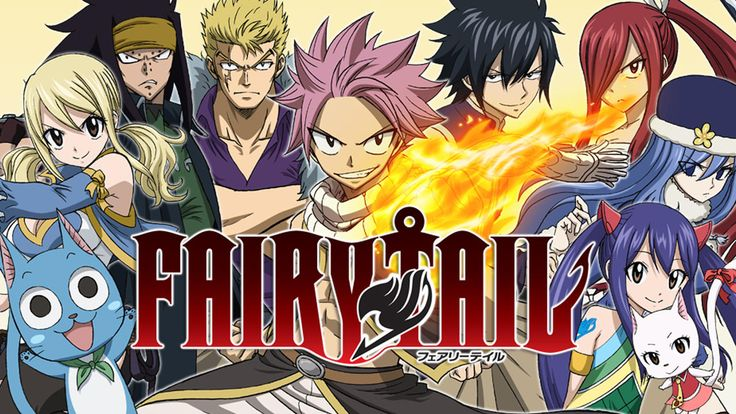

Lucy Heartfilia é uma jovem maga de 17 anos que deseja tornar-se uma maga evoluída. Para isso,
ela terá que entrar em uma guilda de magos, ganhar dinheiro para sobreviver e também para aprimorar suas habilidades.
Assim sendo, ela chega até a cidade de Hargeon, onde encontra Natsu Dragneel e Happy.
A história se passa no Mundo Mágico, um universo onde a magia é usada em larga escala e os magos têm um alto status.